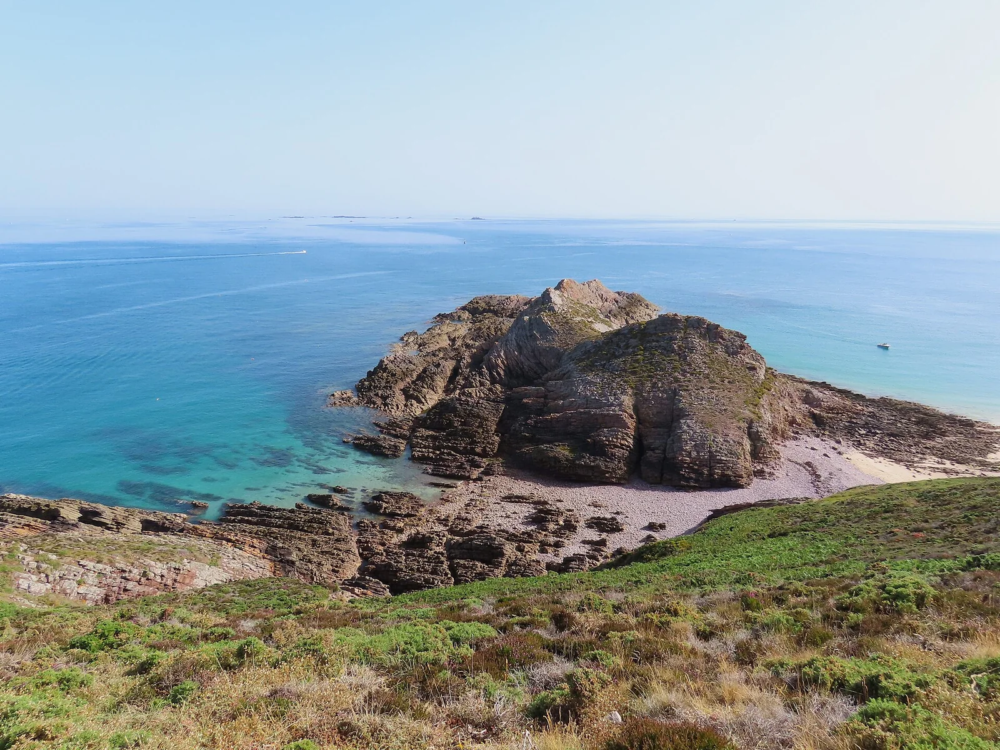

Erquy — Cap d'Erquy
Côtes-d'Armor, France · kayak, snorkeling, baignade, paddle

Eaux claires et landes de grès rose du cap d'Erquy : criques sauvages parfaites pour le kayak, le snorkeling et la baignade.
- Lieu
- Côtes-d'Armor, France
- Niveau
- Débutant
- Activités
- kayak, snorkeling, baignade, paddle
- Type d'eau
- Mer / océan
- Coordonnées
- 48.63, -2.47 (position approximative du secteur)
Dangers à connaître
- Rochers et plateaux découvrants.
- Courants entre les criques.
Le conseil d'Ocean Buddy
Explore les criques du cap en kayak par mer calme.
Ouvrir dans Ocean Buddy Télécharger sur l'App Store
Source : Description historique Ocean Buddy · vérification externe en attente.